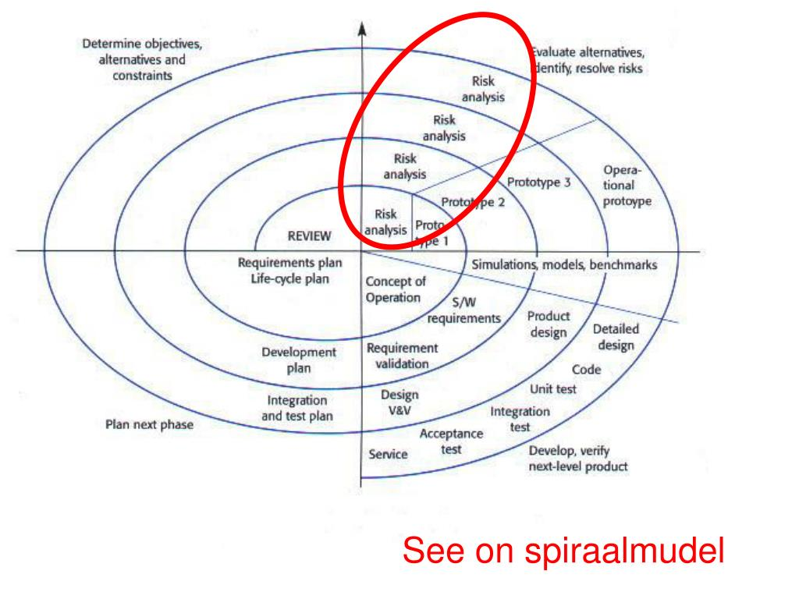

spiraalmudel on iteraktiivne arendusmudel, mille protsess kulgeb spiraalselt ning selle iga kordus algab lähema eesmärgi kavandamise ja
riskide hindamisega ning lõppeb kliendiga ehk eesmärk peab saama täidetud ja kontrollitud. esimene kordus võib olla seotud näiteks süsteemi teostatavuse
uurimisega, teine nõudmiste kirjeldamisega, järgmine kavandamisega jne. mitu kordust on enamasti seotud tarkvara realiseerimisega,
kus tema hindamine toimib inkrementaalselt. Kindlasti ei tohi spiraali korduseid võrdsustada tavapäraste arendusprotsessi faasidega.
Iga kordus on jaotatud 3 kuni 6 sektorisse sõltuvalt autorist. Sektorite töömahukus võib olla erinev.
Boehm'i järgi jaguneb spiraal neljaks sektoriks, milleks on eesmärkide seadmine, riskide hindamine ja maandamine, arendus ja valideerimine ning planeerimine.
Eesmärkide seadmisel määratakse selle faasi ehk korduse eesmärgid, piirangud protsessis, tulemused, juhtimisplaan, võimalikud riskid ning nendest lähtudes alternatiivsed
strateegiad.
Iga leitud riski analüüsitakse ning võetakse midagi ette nende maandamiseks (nt riski korral, et nõudmised pole adekvaatsed, tehakse prototüüp).
Siin etapis valitakse arendusmudel, mis lähtub riskihindamisest. Mudel peab olema selline, mis aitab riske vähendada. Näiteks kui suurim risk on kasutajaliides,
võib aidata prototüüpide tegemine.
Planeerimisel vaadatakse projekt üle ning tehakse otsus, kas järgmisel kordusel jätkatakse. Jätkamise otsusel tehakse plaan järgmise faasi jaoks.
Selle mudeli kõige olulisem erinevus on riskidega, s.o võimalus, et midagi saab untsu minna, arvestamine. Kui riskid muutuvad reaalseks, ületatakse
seatud tähtajad ja maksumus, mistõttu tuleb nendega arvestada ning leidma võimalused nende maandamiseks.

| HEAD | VEAD |
|---|---|
| korduv analüüs ja võimalike riskide leidmine ning maandamine | pideva muutuse korral võivad eelarved ja tähtajad lõhki minna |
| moodulite kaupa tarnimine | |
| projekti on võimalik enne uut etappi katkestada või muuta |
viited infole: eõpearhiiv